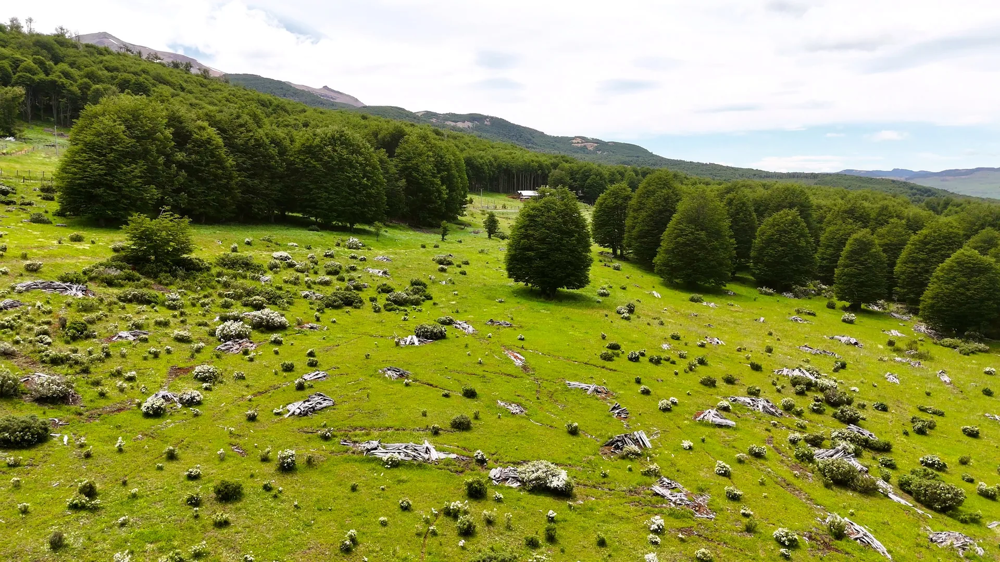
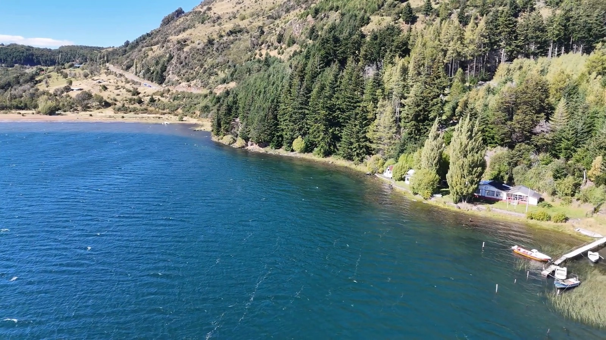

Descubre Aysén antes de llegar
Cómo llegar, qué ver, dónde pescar, esquiar o caminar, y qué saber para tener tu propio refugio en la Patagonia chilena.

Cómo llegar a Coyhaique: vuelos, aeropuerto y rutas
Vuelos a Balmaceda, el nuevo terminal del aeropuerto (octubre de 2026), distancias y rutas para llegar a la capital de la Patagonia de Aysén.
Leer guía →
Catedrales de Mármol: guía para visitarlas
Cómo llegar a las Capillas de Mármol del Lago General Carrera, tours en bote y kayak, mejor época y consejos.
Leer guía →
Carretera Austral: la ruta más bella de Chile
Tramos, imperdibles cerca de Coyhaique, estado del camino y consejos para recorrer la Ruta 7.
Leer guía →
Centro de ski El Fraile: a 30 minutos de Coyhaique
Nieve en invierno, trekking y descenso en bicicleta en verano: cómo llegar al centro de ski El Fraile, a 30 minutos de Coyhaique.
Leer guía →
Pesca con mosca en Aysén: ríos, temporada y licencia
Los mejores ríos de Aysén para pescar truchas, fechas de la temporada y cómo sacar la licencia de pesca.
Leer guía →
Trekking en Aysén: Cerro Castillo, Queulat y más
Circuito Cerro Castillo, Ventisquero Colgante de Queulat y senderos cerca de Coyhaique: temporadas y reservas.
Leer guía →
Vivir en Coyhaique: calidad de vida en la Patagonia
Clima por estación, servicios, conectividad y estilo de vida en la capital de Aysén.
Leer guía →
Cómo comprar una parcela en la Patagonia chilena
Rol propio, subdivisión de predios rústicos, qué revisar antes de comprar y si los extranjeros pueden comprar en Chile.
Leer guía →
Lago Elizalde: guía para visitarlo
Cómo llegar al Lago Elizalde desde Coyhaique, pesca, navegación y qué hacer en uno de los lagos más cercanos a la ciudad.
Leer guía →
Puerto Ingeniero Ibáñez y el Salto del Río Ibáñez
Cómo llegar a Puerto Ingeniero Ibáñez, el Salto del Río Ibáñez, la barcaza a Chile Chico y qué ver a orillas del Lago General Carrera.
Leer guía →
De Coyhaique a Cerro Castillo: valles, miradores y lagos
El tramo de la Carretera Austral al sur de Coyhaique: Valle Simpson, miradores sobre el valle del Ibáñez y lagos en el camino.
Leer guía →